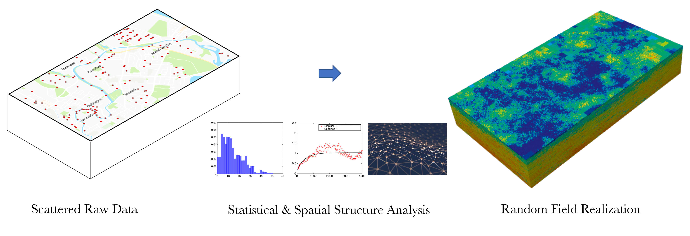

Spatial Uncertainty Research Framework¶
{kind=link}
What is SURF¶
Many environmental and geographical models, such as those used to understand and manage natural systems, and those used in climate studies, often rely on spatially distributed data as input that are known imperfectly and there is a lack of knowledge about the distribution pattern of the variable in a space. Hence spatial uncertainty occurs. Uncertainty in the input data can propagate into model predictions.
SURF is a Python package for performing spatial uncertainty analysis using random fields and machine leaning. The user provides a spatially scattered dataset, SURF learns the variation patterns in the dataset and predict values at locations where there are no observations. Using random fields, the user can specify a correlation function to guide the simulation of uncertainty propagation. Using neural networks, SURF trains itself on the known dataset and predicts missing values based on the spatial patterns it found in the data.
Technical Manual¶
Developer Manual¶
How to cite¶
Charles Wang. (2019, September 28). NHERI-SimCenter/SURF: v0.2.0 (Version v0.2.0). Zenodo. http://doi.org/10.5281/zenodo.3463676
License¶
The SURF application is distributed under the BSD 3-Clause license, see Copyright and license for details.
Acknowledgement¶
This material is based upon work supported by the National Science Foundation under Grant No. 1612843. Any opinions, findings, and conclusions or recommendations expressed in this material are those of the authors and do not necessarily reflect the views of the National Science Foundation.
Contact¶
Charles Wang, NHERI SimCenter, University of California, Berkeley, c_w@berkeley.edu